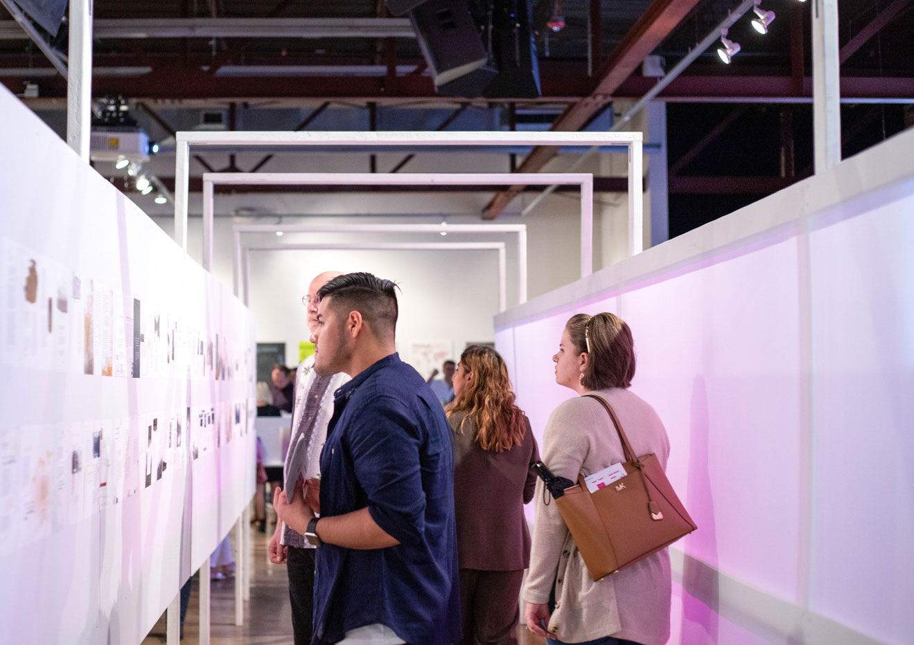

FLUX is an exhibition showcasing the work of 26 graphic designers from the University of Houston’s Graphic Design BFA program class of 2019. By recognizing the concept of flux, we design with uncertainty and rigor, curiousity and knowledge, discipline and openness. Now more than ever, we seize the opportunity to be content generators, form makers and change agents. As part of this project, I was responsible for exhibition design, wayfinding, and production.
